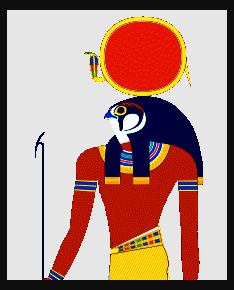
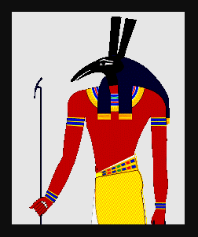
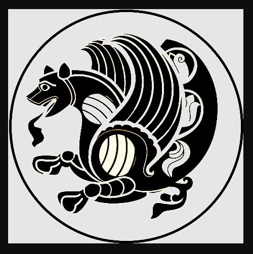

Mandrake
Mandragora, a plant genus belonging to nightshade family Solanaceae, known as mandrakes) was included in numerous magical potions. All species of Mandrake contain highly biologically active alkaloids, tropane alkaloids in particular, making the plant, both root and leaves, hallucinogenic and hypnotic and in sufficient quantity, poisonous via anticholinergic.
Many myths and legends surround the mandrake, which was said to resemble a naked human body. Among the many superstitions surrounding the
plant was the belief that it was propagated by the blood of the condemned, and would grow prolifically underneath the gallows.
It is the position of the Archon Philosopher that consciousness is a Law of Physical Nature and that human consciousness, as an example in a sentient creature of a necessary microcosm of the macrososm of consciousness, will be affected by a variety of chemical agents, as well as other "shocks" to the brain. This is due to the connection point between a individuated sentient creature's physical structure and a flow of consciousness able to "latch" onto that necessary physical junction box: damage the junction box and one damages the access to consciousness.
Thus, sufficiently changing the brain reshuffles the Kantian Categories of Thought [Cognitive Structures] so as to restructure understanding of and thus ability to control the world. Some of these changes are obviously non-sustainable and prevent sustainability; however, insights gained and new methods for organizing understandings of the world via Mandrakes or other substance is akin to a magical (deeply transformative) experience. These events as Peak Experiences are common but so unsettling that most people prefer to ignore these events when they occur, while maintaining life-long memories of these experiences. While the exact mechanism of effect will be ultmately unfinalizable, as is the connection between brain and mind, the introduction of chemicals that can be seen clearly to affect the brain, demonstrate that the brain is the seat of the mind. However, these types of pursuits allow for an understanding of a multi-consciousness universe.
Marduk
Marduk is the fabled heroic god of {2nd Generation}
Mesopotamian pantheon. Marduk fought and destroyed Tiamat, one of the Primordial gods, in the Mesopotamian version of the Greek War of the Titans.
Metaphysical Fields
Coined by the Archon Philosopher, Metaphysical Fields are interplays of the Laws of Physical Nature, acting as hidden structures morphing the Field of Experience. These Fields affect the organization of
matter and act as constraints on the shape of all possible experience, while always adhering to the sum total of the Laws of Physical Nature.
Examples of these Metaphysical Entities include the Fibonacci Sequence, Euler's Number, i, π, the Feigenbaum Constant, and the Attractors (normal, strange, hidden). All of these organizing features of our universe seem to be uncaused yet are real, like the Laws of Physical Nature. The universe is affected by both static and dynamic Metaphysical Fields. One example of a dynamic field is the Clifford Attractor, as seen in the animated gif below.
One thing to notice about this particular Attractor is that is starts out normal and then becomes highly chaotic: this pattern seems to be experienced in the course of human history.
Metaphysics
Anaximander of Miletus was the first great metaphysician. He sought a rational explanation for the cause, or principle, of everything and anything, postulating the "undefined-unlimited" as the underlying cause of everything. The Greeks at that time, roughly 2,500 years ago, had adopted and adapted the Egyptian, Persian, Phoenician and Mesopotamian polythesistic explanation of gods with powers arising from the Chaos, focussing on moral or dramatic relationships or epic connections with the world. But the matter of why there was any god at all was left hidden in the mists of ancient stories of jealous, emotional, divine personalities and the forces they weilded. With his teacher Thales, and Anaximines, both from Miletus, Anaximander began the quest to rationally answer the metaphysical question that was taken up by Heraclius, Parmenides, and others in Greece, until Socrates redirected (misdirected) this critical thinking power into the more profitable and less important area of moral questions and language games.
While moral questions of right and wrong do belong to philosophy under the rubric of ethics, no moral question can adequately be answered until one knows where one is. Right or wrong, good or bad, rely on a understanding of where one is: if one is in a prison, moral questions are answered differently than if one were in paradise, or in a divine testing ground, or livestock on a farm, on in a computer simulation, or in hell or in heaven and so on and so on. Thus, by jumping ahead into questions that cannot be answered, the Wider Western Civilization has been hijacked from uncovering its whereabouts.
Metaphysics is the science that seeks a coherent explanation of why there is anything, including Being or the Being-of-anything.
- Philosophy seeks a rigorous and clear explanation of all intersubjectively verifiable matters experienced in the lived-in world. Knowledge is judged according to epistemological standards and only the strongest and most stable of knowledge claims are admitted, or at least admitted into discussion without qualification. The sum total of the explanation must cohere with itself, without the necessity to believe wholly unproven elements. As the subject matter resides in the past, modern science can only be used to support testable matters in the present.
- Religions tend to assume or postulate or decree a supernatural entity that does not abide by the natural forces (thus "super"-natural) but who when creates everything for reasons that are fully understandable only to that divine entity.
- Modern science has stumbled outside of its proper bounds and mistakenly allowed astrophysics into its fold, thus undermining confidence in science and unabashedly introducing incoherent and ad hoc theories to explain everything including the magical big bang theory, with its incoherent and equally magical "gravitational singularity theory", and other fanciful conjectures such as dark matter/dark energy.
- Mystics and other esoterics seek an explanation of everything through imprecise experiences and feathery connections between events and minds, concerned more about impressions than intersubjectively verifiable data.
As mentioned in the essay at the top of this Esoteric Dictionary, there are different esoteric approaches to answer the metaphysical question. One detailed image is here. Another image detailing the relationship between philosophy, religion and mysticism is here This latter image also contains a stark warning to Archons=Visible Angels=Aliens.
Mobius Strip
It is the position of the Archon Philosopher that this popular space reflects one of the many topologies that arise from the cascading interplay of the Laws of Physical Nature and provide for an open interpentrating boundary of the Field of Experience.
See Infinity.
Moon 
The Moon is an object in the sky of Earth. The physics of the moon according to its size and distance from earth is impossible, and represents in its symmetry to the sun a stimulant for the thinking of humans
about the lights in the sky.
The symbol representing the Moon is a crescent. In astrology, the Moon is the ruler of Cancer.
Paracelsus assigns the brains as the vital organ of the Moon.
In mythology the moon is often female, a goddess who may be paired with a Sun god. The Greeks associated the moon with the goddess
Artemis, as well as Hecate, Cynthia, and Selene. The Roman name for the moon is Luna.
It is the position of the Archon Philosophyer that in the construction of our space by the leadership of the Type III Civilization, the moon likely serves a variety of purposes. The vast number of issues in explaining the features of the moon and the silence about these is startling and attempts to skirt over, or downplay, these issues is a symptom of scientism.
N
Neo-Platonism
New (neo) Platonism was a powerful synthetic movement reconciling an abstract but moral Monad (the One -- re: world of perfect forms of Plato) as giving rise to
the multitude of gods of the Greek pantheon, and further to the world as it is experienced. In this, as an idealist program, it entertains a variety of perspectives of the philosophers so called "Neo-Platonist" rather than seeks to circumscribe
dogmatically held positions.
The leading Neo-Platonists were:
- Dionysius the Aeropagite d. 100 (known also as Pseudo-)
- Ammonius Saccas d. 242
- Plotinus d. 270
- Porphyry d. 305
- Iamblichus d. 325
- (1) Plutarch of Athens d. 430
- (2) Syrianus
- (3) Proclus d. 485
- (4) Marinus
- (5) Isidore d. 520
- (6) Damascius d. 538 (Leader of the Neo-Platonic Academy in Athens).
See also Golden Chain
Neptune 
In the Copernican system, Neptune is the eighth and farthest known planet from the Sun in our solar system. It is the fourth largest planet by diameter,
the third most massive planet, and the densest giant planet. Neptune is 17 times the mass of
Earth and is slightly more massive than its near twin Uranus.
In Roman mythology, Neptune was known as the god of the sea; his Greek equivalent was Poseidon, and was the brother of Jupiter, Pluto and Juno. Neptune carried a trident, and rode a dolphin or a seahorse.
In astrology, Neptune is the ruler of Pisces; however, Neptune is not included in the list of classical planets.
Numbers are the content of mathematical formula and sentences. Numbers are described and organized in
sets of numbers, each enclosing the previous. Like all symbolic representations of reality, numbers do not always exactly reflect
the lived-in-world, and formula rely on assumptions and abstraction and sometimes approach paradox or a non-defined quality.
We may best think of natural numbers (positive intergers) as adjectives: as in one potato, two potatoes, three potatoes, and eventually
the Incans, for example, would have just removed the noun "potatoes". Negative intergers add an absence idea. Rational numbers which are ratios of
natural numbers either resolve or have repeating decimals, but ultimately remain tied to the lived-in-world. Irrational numbers come in two varieties, with
Algebraic Irrational at some point being able to solve a polynomial equation (root one axis to zero), with the other, Transcendental Numbers, being completely
divorced from any connection to either the lived-in-world or for solving any polynomial. And yet, Transcendental Numbers are critical to describing the world,
though we can never arrive (apparently) at a final determination of these numbers. For example ℇ Euler's Number, Π Pi, and perhaps the Feigenbaum Constant.
The i imaginary number reflects something akin to a parallel fantasy world, where the 4th power of i equates to 1, that is to unity.
The unresolvability in either understanding or mathematically of Imaginary, Transcendental and (most) Irrational Numbers points to issues of unfinalizability.
They are useful in the world, but are ultimately not of the world, and perhaps that is why Descartes named the set of all of these numbers "real", an unintuitive name for
symbols some of which have no exact referent on earth.
O
Orphic Egg
The Orphic Egg within the Ancient Greek Orphic tradition is the Cosmic Egg from which hatched the primordial hermaphroditic golden-winged deity Phanes, who in
turn created the other gods. The Cosmic Egg, often depicted with a serpent wound around it, is the source of the universe.
Called 'Protogonos' (First-Born) and Eros (Love) -- being the seed of gods and men -- Phanes means 'Manifestor' or 'Revealer', and is related to the Greek words 'light'.
It is the position of the Archon Philosopher that this Orphic story is a description of the Demiurge (cited as "Artisan" by Plato in his final work Timaeus) creating the universe from the overhang of
pre-time (the Cosmic Egg/Pleroma), as we see today in the Delayed Choice Quantum Eraser Experiment. This radical departure from the classic Greek mythology does lead one to suspect that this story had
a personal and non-Greek inception. That is, that this story arose from the authentic experience of the ancient Egyptians, Persians or Mesopotamians and became both enhanced and changed in the Greek Orphic retelling.
Osiris
Osiris is an {Ennead - 1st Generation}
Egyptian god, identified as the god of the Underworld, but more appropriately as the god of transition, resurrection, and regeneration. As ruler of the dead, Osiris was 'King of the Living' as ancient Egyptians considered the blessed dead 'the living ones'. He is depicted as green-skinned with a pharaoh's beard, partially mummy-wrapped at the legs, wearing a distinctive crown with a large
ostrich feather at either side, and holding a symbolic Crook & Flail.
Osiris was the brother of Isis, Set, Nephthys, father of Horus.
When ritual magician Aleister Crowley (1875 - 1947 CE) received the Book of the Law from Aiwass in Cairo in 1904, it brought the 'Aeon of Osiris' to an end and ushered in the 'Aeon of Horus'.
Ouroboros
Ouroboros is a Greek word which means tail swallower. The ouroboros is usually depicted in the form of a snake or serpent, circular in shape, swallowing its own tail.
A serpent that devours a serpent is a dragon.
It originated in Egypt as a symbol of the Sun, representing the travels of the Sun disc, while in
Gnosticism it was related to Abraxas, and signified eternity and the soul of the world.
The snake often depicts a symbol of resurrection as it appears to be continually reborn when shedding its skin. In Alchemy, it represents
the spirit of Mercury -- that metaphorical dynamic substance that permeates all matter -- and symbolises continuous renewal and rebirth, the cycle of life and death, and the harmony of
all opposites.
It is the position of the Archon Inquisitor that the serpent squeezing the Cosmic
Egg of Phanes can be seen as change, time, the forces of nature, or laws of physics. That the Cosmic Egg might be seen as the pleroma, and
the Serpent as Abraxas, the movement from the pleromic void of infinite potentiality into a physical plane is an eternal and consistent force within this universe.
A serpent that devours a serpent is a change that stops change - death, destruction, decay, the devil. And yet,
at times, it is necessary to stop a process for an obvious greater good. Thus a self-created dragon - an ouroboros - can be a valiant, a hidden force for righteousness.
A double Ouroboros - two creatures swallowing one another - signifies volatility in alchemy.
P
Pentacle

Pentacles are circle-enclosed five-pointed signs used as magical weapons, that is as short hand figures to access hidden powers. It also symbolizes the element
Earth. The term 'pentacle' has also been used as a generic term for any
magical seal enclosed within a circle. Pentacles is also a suit in the Tarot.
It is the position of the Archon Philosopher that pentacles are a broader construction of a generating function, see image left
and see image right. Where, that a Mandelbrot Set is imageable in
a pictoral form, so certain essential and hidden relations are imageable via the Pentacle and other symbols, sigils, letters, logograms and the like. While not predictable in either choice or outcome, generating functions may provide a powerful bridge of abstraction to solve problems or to gain overviews of situations.
Pentagram
A pentagram is a five-pointed star. The points of the star are normally interpreted to refer
to Earth, Air, Water, Fire and spirit or Aether.
The pentagram remains one of the most potent, powerful, and persistent symbols in human history. The top point represents either the human head or a
non-human Spirit.
According to the Greek mathematician and philosopher Pythagoras, 5 was the number of man because of the fivefold division of
the body and the ancient Greek division of the soul. The pentagram was held sacred to Hygeia, Goddess of Healing and in Greek her name (HGIEiA) is an anagram
for the elements Water, Earth, Spirit, Fire, and Air.
Influential writer and occultist, Eliphas Lévi (1810 - 1875) called it evil whenever the pentagram was reversed, with single point facing downwards.
Philosopher's Stone
It is the position of the Archon Philosopher that the quest for all encompassing knowledge and power (The Great Work), known recently as becoming master of space and time, is a noble and difficult quest. The destination of this
quest was known by Alchemists as the Philosopher's Stone, and by theosophists as changing base animal nature into divine nature within humans.
During the middle ages, philosophy was also focused on experimentation on physical objects in a physics and chemistry sense, and a philosopher's stone was that power able to transmut one substance into another.
However, just after the time of Francis Bacon, philosophy was divided with metaphysics and epistemology separated clearly from the paths of materialist investigations, known early on as natural philosophy and then with the Scientific Method of Francis Bacon, physics and chemistry became Modern Physics and Modern Chemistry.
Naïve materialists and physicists have attempted to transmute non-being into being through ad hoc and at time incoherent materialisms of big bangs, and dark matter or energy in a variety of
attempts to materialistically understand and explain where we are. Such a superficial approach to ontology will necessarily fail. It is the intention of the Archon Philosopher to uncover this grand mystery and to unchain the answer from naïve materialists or other semi-theorists. If a theory will not explain everything, then it cannot be the Philosopher's Stone.
The lights in the sky have had numerous descriptions. Today in the Wider Western Civilization there are three main descriptions. The "standard model" describes the lights in the sky
as both stars and planets formed of large amounts of matter, respectively emitting and reflecting light. This description follows from the Copernican Hypothesis and the Big Bang theory. Another description is
that a singular all powerful God of Abraham created these lights as objects. The third description is that mot of the lights are emanations on a dome ceiling, with the sun and moon as relatively nearby objects within the dome.
It is the position of the Archon Philosopher that as both the Big Bang and God hypotheses are magical conjectures, they must be dismissed as not best explanation. Given the metaphysical originary source as a collapse of a wave-function
by a member of the Demiurgic species and evidence of very advanced technology over a 6,000 period, best explanation looks toward humans as within a node in a Type III Civilization. The star lights are thus electromagnetic waves from the
dome ceiling - note that if all wave forms are "seen", the whole sky becomes completely washed in "light". The planets as wandering planets reflect navigational centerpoints for one of the Archonic Watchers, as they navigate in our space. The sun and
moon are homebases for the main Watchers/Mentors/Archons, serving multiple purposes including energy provider and unavoidable stimulant for thought. Thus, almost all the lights in the sky are projections on a
Dyson-like Sphere by a Type III Civilization.
Given the powerful impact of the lights on human creativity, history records numerous systems to explain the impact and source. While there is no way of ascertaining the degree of correlation between a given planet and involvement by a
particular Archon or indeed of the Demiurge, as generating functions, the stories and connections point to attempts to explain hidden forces within our world. It may been noticed that while today we measure specific regular cycles of the sun in Solar Maximums and Solar Minimums, this does not stretch back forever in geological records - thus we should not misapply the Principle of Uniformity. Also, there are Grand Solar Maximums and Grand Solar Minimums, each corresponding to Grand Cosmic Ray Minimums and Grand Cosmic Ray Maximums, respectively. The connection of space weather (sun) on human physical and mental health has been documented and we can see larger trends with the Spoorer Minimum driving the insanity of the Great Flagellation Movements of the 1250s and 1350s, but later leading to the massively important intellectual feats of the Copernical Hypothesis and Francis Bacon's Scientific Method, founding modernity.
Within a Type III Civilization, it would be possible to harness the power of the sun, and to some extent control the cycles of the sun - however it may generate or collect and redirect energy. Thus, the space of humans (earth) is likely interchangeably pumped up and rationed in terms of magnetic waves and cosmic rays - periodically driving insanity and massive intellectual creativity and then calming things down, pushing humans to achieve the next level, whatever that may be in the conception of the Demiurge and Archons.
The main issue about the lights in the sky would be why this configuration and not some other. In a Type III Civilization, there was likely experimentation with more simple configurations; thus, in the opinion of the Archon Philosopher, earth is a later construction as it exhibits a high level of complexity in both the land-sea configuration and in the sophistication of the lights in the sky. This investment of resources in the human space would imply some contribution by humans to respond positively to this investment. This response is likely a massive response involving the greatest of human powers - the collapse of wave-function in a specifically human way of doing so. This specifically human way is to view the lights in the sky, understand them thus gaining information, and then collapsing an actual universe as understood outside of the dome wall. This was described in my first book: The Book of Ages A Multi-consciousness Metaphysics.
We may look at the traditional 7 Ancient Planets and add in other wanderers as greater or lesser influences by the shifting alliances of Archons, without assuming too much association with specifically ancient Greek understandings of those gods (Archons).
The other ancient planets:
Sun
Moon
Mercury

In the Copernican system, Mercury is the closest planet to the sun. In astrology, Mercury is the ruler of Cancer and Gemini.
Paracelsus assigns the lungs as the vital organ of Mercury.
Mercury, as a Roman God, has Hermes as the Greek counterpart.
Mercury is also one of the ancient and alchemic elements.
Venus

In the Copernican system, Venus is the second planet from the sun. In astrology, Venus is the ruler of
Libra and Taurus.
Paracelsus assigns the kidneys as the vital organ of Venus.
The Greek counterpart of the Roman Goddess Venus is Aphrodite.
Mars

In the Copernican system, Mars is the fourth planet from the sun. In astrology, Mars is the ruler of Aries.
Paracelsus assigns the gall bladder as the vital organ of Mars.
Mars, as a Roman God, has Greek counterpart Ares.
Jupiter

In the Copernican system, Jupiter is the fifth planet from the sun and the largest. In astrology, Jupiter is the ruler of
Sagittarius.
Paracelsus assigns the liver as the vital organ of Jupiter.
The Roman God Jupiter had a Greek counterpart of Zeus.
Saturn

In the Copernican system, Saturn is the 6th planet from the and the second-largest in the Solar System.
Surrounded by 53 confirmed and nine provisional moons, Saturn is the most fascinating.

In astrology, Saturn is the ruler of Capricorn.
Paracelsus assigns the spleen as the vital organ of Saturn.
Saturn's Greek equivalent is the {Titan 1st Generation} Cronos, the father of Zeus and the first head Archon of earth.
Prometheus
In the Greek pantheon, Prometheus, a Titan,
was the creator of humans and friendly to them, giving them fire. With his brother Atlas, he remains a continuing influence in
human affairs, even after the War of the Titans. One wonders if Atum was Prometheus under a different name.
Ptah
In Egyptian mythology from 3100 BCE Ptah was the main creator god, creating the world and the other other gods. His following arose out of the Upper Egypt Memphis, along with the
others of the Triad of Memphis as spouse of Sekhmet and the father of Nefertum.
Sekhmet
Ptah is depicted as a man wrapped in a tight white cloak carrying a staff. In one creation myth, Ptah, who by his wilfulness, 'thought' the world into being.
It is the position of the Archon Philosopher that Ptah is the earliest name for the Demiurge, and one or more members of that species was active as overseer or mentor in the earliest days of humans on earth in that part of the world.
Hieroglyphic of Ptah
This story of Path's thinking the world into being has the best direct analogy with the contemporary description of a wave-function collapse, as seen in the Double Slit Experiment. It is postulated that the categories of thought of the Demiurgic species is different than that of humans and that it is able to see the overhang of pre-time within the Delayed Choice Quantum Eraser Experiment and collapse the wave-function of this universe from that position.
Pythagoras
Pythagoras, 580-500 BCE, was born on the island of Samos in the Thracian Sea, North Aegean Sea. Son of a substantial citizen, he met Thales, who recommended he travel to Egypt. Pythagoras settled in Crotona, founding his school and embracing the world in all its mystery and glory.Numbers Are Visualizable Hiero-glyphs
 Squared Triangles Squared Triangles
The school of Pythagoras was glimmering in sunlight at the summit of a hill, among the cypress and the olive, seashore, gardens and gymnasium embraced the Temple of the Muses looking down upon the Prytaneum harbor, and the city agora all melting together as the Ionian Sea swept the horizon with its line of blue.
The Pythagorean Brotherhood was dedicated to understanding the relationship of numbers, music, reality. Pythagoras' vision, after discovering the relationship of string length to sound, he ventured forth his maxim: "All Things are Number", the credo of the Pythagorean Brotherhood. The structure of their world-view revolved around:
- at its deepest level, reality is mathematical in nature
- philosophy can be used for spiritual purification
- the soul can rise to union with the divine
- certain symbols have a mystical significance
- all brothers of the order should observe strict loyalty and secrecy
Q
R
Ra 
Ra (Ré) was the {Primoridal} Egyptian god of the Sun.
He was considered King of the gods and thus patron of pharaohs. Ra traverses the sky each day in a solar barque named Atet from sunrise until noon, with Sektet going from noon until
sunset, then passing through the realms of the Underworld each night on the solar barge named Matet, to reappear in the east every morning.
As time moved on and forgetfulness set in, Ra became merged with Atum and later with Amun.
S
Sacred Geometry
Mathematical connections that appear symmetrical, that appear as paradox, or as enigmas are a language of the gods - hiero-glyphics - Sacred Geometry that help navigate the world of shared experience and enthrall the subjective idealist world of each of us. Perhap the Circle describes best the limitation of the human cognitive structures, as while we know that there is a definite area to the circle, we can never achieve a definite and final determination of this amount, due to the inclusion of π.
The Pythagoreans promoted visualizing numbers and these ancient seekers had an unquestionable ability to visualize numbers, as in their linking series of odd numbers with the series of perfect squares and to do this using visualized Gnomons.
It is the position of the Archon Philosopher that this coincidence of using math and geometry, and of using generating functions, to construct understandings of our world of shared experience and confirm these understandings is an indication that the "loop has been closed", that we both may and do occasionally stumble across such gifts of insight. Such profound insight is often a temporary and happenstance ability to understand the sacred language of the universe - the metaphysical connectedness behind our stable Field of Experience.
Salt
For alchemists, salt is allegorical for the physical body, the counterpart to mercury for spirit and sulphur for soul. In the effort to penetrate these different forces in the world through the best self-referential examplar, investigators attempted to synthesize an understanding based upon an experimental approach leaving a hermetic, holistic, understanding. Salt is that element of substance and physicality which starts out being coarse and impure, then through alchemical processes is broken down by dissolving then purified and eventually re-formed into pure salt as a result of the interactions between mercury and sulphur.
This allegorical, at time pictoral, understanding is in sharp distinction to the methodological precision and limitations of the scientific method. This method eventually separated out from philosophy proper, first known as natural philosophy and then as modern science. However, these limitations and materialism of the modern sciences has led to an unfortunate combination faith and arrogance encroaching upon modern science, coupled with incoherent theorizing in non-materialist subjects far outside of the limitations of the scientific method. This error is known as scientism.
Seba
The Seba is the Egyptian symbol for 'star'. This simple line drawing made of 5 equidistant spokes resembles a starfish. The
term 'Seba' means ‘discipline’ or 'learning' and is associated with gates and doorways. The early Egyptians had a considerable interest in, and extensive knowledge of, the star-filled night sky.
Stars were supposed to represent the souls of the dead and considered to be the followers of Osiris.
The Seba in itself is representative of a star, the star gods or constellations, but when it is enclosed within a Circle, it comes to represent the Duat, the Underworld or the land of the afterlife to where the souls descend after death.
Secret Scripts
The history of creating sigils/letters/pictograms/glyphs/icons/symbols to reflect thought and re-present ideas of the world is 6,000 years long, dating back to
Cuneiform, Egyptian Hieroglyphics and moving forward in alphabets and in secret alphabets.
A list of secret alphabets is here.
It is the opinion of the Archon Philosopher that esoteric scripts and the lines of any script or alphabet sooner or later by necessity will reflect one of the
metaphysical entities such as the Fibonacci Series or Lorenz Attractor, and will also by necessity accidentally "connect" with any possible written (and verbal)
communications of non-human sentient creatures. Just as once in a while a word of one language mirrors the word of another language
(with only an incredibly rare occurence of the same meaning), there will be symbols, signs, letters, sigils and the utterance thereof which luck
would have it are recognized by non-human sentient creatures.
Apparently, by turning letters and by doing so consistently, the letters and
configurations of the letters may (and may eventually have to) mirror the effect of metaphysical entities operating in the world or reflect some
pigeon language of angels/Archons/aliens, or gain a momentary glimpse through constructive or destructive interference of the network of hidden connections and artistic or holistic images of the functioning of the Field of Experience. See Phoenician Language details here.
Set 
Set is an {Ennead - 1st Generation}
Egyptian god, originally god of the desert and sandstorms.
Set is the Egyptian god of chaos, evil, drought, thunder and storm, and destruction, embodying the principle of hostility, even outright
evil. In his hurry to be born, Set tore himself from his mother's womb. He murdered his brother, Osiris, and attempted murder of his nephew
Horus.
Set was identified with the Greek Typhon, a monstrous serpentine giant and the deadliest creature in Greek mythology.
It is the position of the Archon Philosopher that Set represents destruction, the Law of Unintended Consequence, the "shattering" of the Kabbalistic Sephirotic vessels. We today speak of risk, good fortune and bad luck, and of freewill: these are features of the cascading interplay of the metaphysical Laws of Physical Nature and of the metaphysical entities within the Field of Experience, which together provide the shape of the physical lived-in world. Ultimately in order to have the universe as imagined in the overhang of pre-time as originarily imagined by the Demiurge, the structure of the universe includes an unfinalizability from the perspective of any sentient creature through its access to consciousness, as consciousness - one of the Laws of Physical Nature, is equiprimordial to the other Laws and thus consciousness cannot "finalize" the other Laws of Physical Nature.
Seven Amahraspands
The Seven Amahraspands are the {2nd Generation}
in the Persian pantheon of gods. Ardiwahist, fire, is a needed force for Zurvan to give rise to everything, signaling
another time assymetry in ancient Persian ontological thinking.
The Sigillum Dei Aemeth, or Seal of the Truth of God, is most widely
known through the writings and artefacts of John Dee (1527 - 1608), a 16th century occultist and astrologer in the court of Queen
Elizabeth I who devoted much of his life to the study of Alchemy, divination, and Hermetic philosophy.
Although a similar sigil appears in older texts of which Dee was probably familiar, he was not happy with them and ultimately 'gained guidance
from angels' via the medium Edward Kelley (1555 - 1597), an English Renaissance occultist and self-declared spirit medium, to construct his own version. Dee inscribed the sigil on circular wax tablets.
He would commune with the angels via Kelley and a 'shew-stone', the tablets being used in preparing the ritual space for such communication. One tablet was placed upon a table, with the shew-stone being placed upon that tablet. Four other tablets were then placed beneath the legs of the table.
Simurg 
Simurg is an ancient Persian mythological bird. This very ancient, gigantic, female winged creature is usually described as having a body
covered in scales, with a dog's head and foreparts, lion's claws and peacock's wings and tails. It can also be depicted with a human face.
The Simurg was considered a benevolent guardian figure with protective and healing powers, and was believed to purify the waters and the land
as well as bestow fertility. It was also seen as a messenger or mediator between the sky and the Earth,
and symbolic of their union. The Simurg is mentioned quite frequently in classical as well as modern Persian literature, used specifically in Sufi mysticism as a metaphor for god.
The mystical bird appears in several old tales of creation. According to Persian legends, the Simurg was so old it had witnessed the world's destruction three times.
Solomon's Knot
Solomon's knot is the most common name for a traditional decorative motif used since ancient times, and found in many cultures. Despite its name, it is classified as a link, and is thus not a true knot according to the definitions of mathematical knot theory. In topology, knot theory is the study of mathematical knots, which while inspired by knots which appear in daily life in shoelaces and rope, a mathematician's knot differs in that the ends are joined together so that it cannot be undone.
Solomon's knot consists of two closed loops, which are doubly interlinked in an interlaced manner. When laid flat, the knot is seen to have four crossings where the two loops interweave under and over each other. This contrasts with two crossings in the simpler Hopf link -- in mathematical knot theory, the Hopf link is the simplest nontrivial link with more than one component.
Solomon’s knot is related to the Swastika and the Shield Knot, and is often interchangeable for these solar emblems.
Star of David
The Star of David, also known as the Magan David (Shield of David) and Solomon's Seal, has been a symbol associated with Judaism
for centuries, but it was not until it was chosen to appear on the flag at the First Zionist Congress in 1897 that it officially became associated with that religion. It was then that it became the symbol of the Jewish people, Zionism, and the Jewish communities throughout the world.
A stone bearing the Star of David in a synagogue in Galilee dates back to the 3rd century -- it is thought it was used as a decorative design. The symbol was used in the year 1108 in the Leningrad Codex, the oldest complete edition of the Hebrew Bible in existence. The term, Magan David, was used as early as the 11th century as a name for the God of Israel, where God is compared to a shield in the divine protection of King David. A 12th century text, Eshkol ha-Kofer, a work on the Ten Commandments by little-known Judah ben Elijah Hadassi also refers to the Shield of David. Coins found in the 13th century bear the symbol the Star of David.
Stèle of Revealing
The Stèle of Revealing, known also as Stèle 666, is an ancient Egyptian funerary artefact of Ankh-af-na-Khonsu, from Thebes, around the time of the XXVI Dynasty.
This artefact played a key role in the creation of the philosophy and religion known as Thelema, and according to Aleister Crowley, his wife Rose had reported a revelation from the god Horus,
through his messenger Aiwass. Crowley took her to the Boulaq Museum in Cairo, Egypt (now the Museum of Egyptian Antiquities, the Egyptian Museum, or the Museum of Cairo) to see if Rose could recognise Horus, which she did as an image on a painted Stèle which bore the catalogue number 666.
The Stèle is made of wood and covered with a plaster gesso, which has been painted. It measures 51.5 centimetres high and 31 centimetres
wide. On the front, Ankh-af-na-Khonsu can be seen as a priest of Montu presenting offerings to the falcon-headed god Ra-Harahkhte (Horus of the Horizon), a syncretic form of the gods Ra and Horus, who is seated on a throne. The symbol of the west, the place of the Dead, is seen behind Ra-Harahkhte. Above the figures
is a depiction of Nut, the sky goddess who stretches from horizon to horizon. Directly beneath her is the Winged Solar Disc, Horus of Behdet.
Sun 
The astronomical and astrological symbol for the Sun is a shield with a Circle
inside. Under the standard model, the Sun is an energy self-generator at the centre of a system of physical bodies, including earth, revolving around it. Due to a variety of incoherent theoretical
speculations, the standard model is no longer tenable.
The sun is by far the most important source of energy for life on Earth, as recognized by many pantheons of many cultures including a sun deity as a main deity.
In astrology, the Sun is the ruler of Leo. Paracelsus assigns the heart as the vital organ of the Sun.
It is the opinion of the Archon Philosopher that the silence with which Eddington's incoherent theory of the sun creating energy by means of nuclear fusion is evidence of the dread underlying contemporary scientism. Rather than announce clearly and boldly
that this fusion conjecture was wrong to have been firstly accepted in the first place and then pronounced and then repeated as a "scientific finding", the "scientific community" is surreptiously hiding their lack of academic and intellectual honesty while attacking those who point this out. This bespeaks propaganda and not truth-seeking, and is a great sadness on the edifice built by Francis Bacon and so many others.
It is also the position of the Archon Philosopher that earth is a node within a Type III Civilization, founded by the species of the Demiurge and managed with a great number of other nodes by the Archons, who serve as Watchers, mentors, Guardians, angels. Within this node, the sun serves as the power source as well as inviting intellectual growth for humans as well as a tool for the control over behaviour in release of magnetic fields, cosmic rays, and large plasma discharges (the Deluge). In a double deception, it is in the interest of the Demiurge and Archons to actively discourage full understanding of the space of earth. Thus we see total hostility to any propogating that the Copernican Hypothesis is not correct; we also see massive support in funding and media coverage in any attempt to discover dark energy or dark matter and support of the standard model; and we witness a host of military and control structures to prevent humans from venturing to independently discover the shape of their world.
Swastika 
The 'Swastika' or 'Sun Wheel' is an ancient religious symbol, a version of the Solar Cross
which had been around for several millennia before it was adopted officially by Adolf Hitler on 7 August 1920 at the Salzburg Congress, when it became the emblem of the
National Socialist German Workers' Party.
The swastika has been found on Greek coins and has certainly been in existence for more than 3,000 years, for artefacts such as pottery and coins from ancient Troy
show it to have been a commonly used symbol as far back as 1000 BCE. As such, it pre-dates the ancient Egyptian symbol, the Ankh. In Sun god worship, the swastika represents the Sun's course in the heavens.
There is on-going debate as to what the swastika now stands for. For 3,000 years it represented the Circle of Life and good luck, but because of the adoption of the symbol by the Nazis, it has assumed a new meaning of hatred, death and destruction.
T
Tarot
Tarot Cards have been called a "philosophic machine", meaning that through the systemic framework the random placement of meaningful cards uncovers answers (and questions) to philosophic issues. In this mystical approach to allow knowledge to flow in, rather than assertively seek out knowledge, unexpected connections will be uncovered, along with much that is frankly irrelevant. In this, Tarot is like the vast majority of sciences: providing no secure predictability but in the absence of better information, can provide an impetus for any action rather than stasis.
The history of the Tarot is mired in the mists of forgot time, but certainly evidence of the cards being used in some fashion occurs in Europe by the 1400s, with the first mention in Sermones de ludo cum aliis or Sermons of games with dice, written by a Dominican friar, dated to between 1450 and 1480. Needless to say, the Tarot cards provide yet another numerical system that integrates other esoteric systems in the quest to uncover the mystery of being.
A very good analysis by Michael S. Howard is available for the Major Arcana.
An interesting historical evaluation of the Trumps (Major Arcana) can be found in Petrarch.
Tetractys
The tetractys is a triangular figure composed of the first ten points arranged in the shape of a pyramid, devised by Greek philosopher Pythagoras as a symbol of the Cosmos. It is composed
of the integers one to ten, aligned in four rows (tetractys means 'fourfold').
It was so sacred to the Pythagoreans that it formed the basis of their oath: "By that pure, holy, four-lettered name on high, nature's eternal fountain
and supply, the parent of all souls that living be, by him, with faith find oath, I swear to thee."
The first line is unity of zero dimensions, the second is a one dimensional line, the third reflects a two dimensional shape and the fourth line is for a three dimensional solid. There are other allegorical representations possible.
Theurgy
Theurgy in the words of Neo-Platonist Proclus (c. 480) is "a power higher than all human wisdom embracing the blessings of divination, the purifying powers of initiation and in a word all the operations of divine possession".
It forms a spritual magic through which one may communicate through emanations of Nature, Psyche (soul), Nous (consciousness) to access the One, the Good (source of all that is).
The Archon Philosopher views that there are hidden mathematical and other relationships, referred to as Metaphysical Entities, and that these Metaphysical Entities help form the structure of the Field of Experience. These such relationships may be occassioned upon artistically, holistically, mystically, intellectually, through rigorous disentanglement and by other means. These metaphysical entities may be akin to those emanations cited by the Neo-Platonists.
As we venture outward from the center of our Field of Experience to the edges, we encounter less and less certainty, with the normal way that we greet things falling away and revealing hidden connections or allowing minds prepared to see those connections to see those connections. This is akin to moving "in" in a Mandelbrot set, and seeing the different vantage points of the fractal, or noticing a Fibonacci Series if one has been schooled to notice one. However, the unfinalizability at the edges of the Field of Experience may not be resolvable by consciousness but may appear as ever unfolding patterns, non-ending numbers, and similar features of metaphysical entities.
Thoth
Thoth is the {Primoridal} god of wisdom in the Egyptian pantheon, overseeing writing and magic, arbiter between good and evil. Thoth was most often portrayed as
an ibis or baboon-headed man, and his chief temple was located in the city of Khmun, later Hermopolis.
Thoth helped to maintain the universe and with Ma'at stood on either side of Ra's boat, which sailed across the sky in the day and travelled through the Underworld each night, to reappear in the east the next morning.
The Archon Philosopher speculates that Thoth/Hermes Trismegistus/Orpheus/Cadmus as a legacy participant of the Demiurges' first generation of earth overseers, known by the ancient Greeks as the Titans. Thoth, one of the Archons = Visible Angels = Aliens was a survivor of the deluge (along with Mede, Mithra, Seth, Melchizedek, Aeneas, Og, and Nimrod) and sought to fulfill his alloted and personal mission to inform humans of the interpenetration of the Archons in human space, and to fulfill the mission of humans to understand their world and appropriately collapse wave-functions of this understanding.
Tiamat
Tiamat is the main creation goddess for the ancient Mesopotamians. In the {Primoridal}
stories, the serpentess Tiamat generates the pantheon, later to be destroyed by her descendent Marduk. Her great-grandchildren Anu and Ki form the basis of the 1st generation and Ki represents the time assymetry in the Mesopotamian pantheon.
Tree of Life
The Tree of Life is a widespread mythological archetype, related to the concept of a living source of life itself.
Examples of the Tree of Life in various religions are:
- Ancient Egypt -- hierarchical chain of events that brought everything into existence.
- Ancient Persian mythology -- the Gaokerena world tree is a large, sacred Haoma tree which bears all seeds.
- Ancient Mesopotamia -- was represented by a series of nodes and criss-crossing lines.
- In Catholic Christianity -- the immaculate state of humanity free from corruption and original sin.
- Islam -- as the 'Tree of Immortality' in the Quran.
- Kabbalah - the ten interconnected Sephiroth powers in the Divine realm.
Triangle of Art
The Triangle of Art comes from the grimoire tradition of magic. It is the protected space outside the magic Circle,
into which spirits are compelled to appear in Solomonic Ritual Magic. The usual form is of a triangle, circumscribed with various words of power, containing an inner, blackened circle.
The purpose of the triangle is to contain the manifested entity. The central circle is usually inscribed with the sigil (seal) of the
spirit to be evoked. The Triangle of Art first appeared in the Lesser Key of Solomon, the Goetia, where its function was to constrain and force evil spirits to manifest.
It is the position of the Archon Philosopher that language appears in multiple symbol forms, including geometric forms. These "languages" may not be decipherable by humans but may form some ability for other sentient creatures: though there may be a means of translation. One example would be the Golden Ratio, which has both effects on human psychology in aesthetics as well as forming a metaphysical entity in structuring the Field of Experience and its physical lived-in world. The metaphysical entity Pi, &Pi, fosters the transcendence of the circle, and if there is any symbolic allegorical or intential "presense" of a circle, incribing one would draw that structure of our lived-in world closer. This seems all quite mystical and yet there is some grounding to this. Symbols, like notes in music, seem to speak directly.
U
Udjat
This symbol is named after the sound Eye of the Egyptian god Horus. According to legend, Horus (the younger) lost his left eye while battling his uncle Set, which then fell to pieces. It was found by Thoth who reassembled it. It is now a universal symbol representing higher knowledge, inner vision and insight into occult mysteries.
The Udjat was regarded as a powerful protective amulet, and is frequently found in tombs, on coffins and on the seal which was placed over an incision in a mummy through which the internal organs were removed.
UFO and UAP Awareness
There is and has been speculation on the presence of non-human sentient creatures on earth, interacting with humans and following some mysterious agenda for 6,000 years.
Urbane and informed investigations by people like Richard Dolan, the formation of cults, religions and secret societies and an increasing general awareness that there are and have been
clues provided and clues uncovered by humans which need explication. A collection of photos provides some introduction to what does need clarity. Photos here.
Uniformitarianism
This Doctrine of Uniformity or Uniformitarian Principle is an assumption that the laws of physics and natural processes are the same today as they were in the past and will be in the future.
It is the position of the Archon Philosopher that the Laws of Physical Nature are uniform within the Field of Experience, that is that the Laws of Physical Nature hold true and constant across the universe.
Any process that is not able to be manipulated by a sentient being would also follow the Uniformitarian Principle. However, for example, the Theory of Evolution of Charles Darwin is not a Law of Physical Nature, nor a law of physics and is, at times, a non-natural process fully able to be manipulated by sentient beings. Genetic engineering was not known at the time of Charles Darwin, but today we can easily imagine creating a genetic set and sprinkling this across a waiting land mass, to create a bio-diverse and genetically related eco-system. Thus the appeal to best explanation of the history of humans no longer is easily determined as an algorithmic process of survival of those creatures who fit into their environment. However, it is clear going forward for humans, that only those humans which can fit into their environment will have children that have children; and thus the Theory of Evolution is true going forward in time, testable going forward in time and almost tautological as going forward in time.
Appeals to back-date the Theory of Evolution while claiming the confidence and certainty of modern science is to bring the Theory of Evolution into disrepute and pseudoscience.
Uraeus
The Uraeus is the serpent emblem found in Egyptian portrayals of royalty and deity. It is a symbol of divine authority, representing the
goddess Wadjet as the All-seeing Eye of Ra, who was believed to protect the pharaohs by spitting fire, and the emblem of the Lower Kingdom of Egypt. According to legend, the
cobra was given to the pharaohs as a sign of kingship by the god Geb.
Pharaohs wore the Uraeus as a head ornament, either with the body of Wadjet atop the head, or as a crown encircling the head. This
indicated Wadjet's protection and reinforced the pharaoh's claim over the land. In whatever manner the Uraeus was displayed upon the
pharaoh's head, it was, in effect, part of his crown. The pharaoh was recognised only by the wearing of the Uraeus, which conveyed legitimacy to the ruler.
Uranus 
In the Greek pantheon, Uranus {Primordial}
was the personification of heaven. With Gaia, they bore the Titans {Primordial} {Titans - 1st Generation}.
In the Copernican system, Uranus is the seventh planet from the Sun. While being 'visible' to the naked eye, it was not recognised as a planet due to its light being dim and its slow orbit. Uranus became the first planet discovered by William Herschel on 13 March 1981 with the use of his homemade 6'2" reflecting telescope. The planet
is tipped over on its side with an axial tilt of 98 degrees, and is often described as 'rolling around the Sun on its side'.
V
Vergina Sun
The Sun of Vergina (Macedonian Sun, Argead Star) is a distinct eight, twelve, or sixteen-rayed figure, so named after a stunning example found on a
larnax (coffin) in the tomb of Philip II of Macedonia, the father of Alexander the Great and a notable member of the Argead Dynasty.
The motif itself is ubiquitous in Greek and Macedonian art and likely a solar symbol, being found in temple art depicting the Sun
god Helios.
Other notable examples of the motif have been found at Eleusis and the Temple of Nemesis.
Vesta
Vesta was the goddess of the hearth, the centre of the Roman home. She was the protector of the sacred flame, which was supposed to have
been brought from Troy to Rome by the hero Aeneus. This flame had to be kept burning all year, for if it were ever to go out, disaster
would strike Rome. The flame was kept alive by the Vestal Virgins, priestesses who were chosen when they were as young as six. They
had to remain priestesses for thirty years, and were not allowed to marry.
In Roman homes, every day during a meal a small cake was thrown on the fire for Vesta -- it was supposed to be good luck if it burnt with a crackle.
In the Copernican System, Vesta was latterly the name given to a dwarf planet.
W
Wadjet / Wedjat
Wadjet was one of the earliest Egyptian deities and was often depicted
as a cobra as she is known as the serpent goddess.
She was one of the goddesses given the title Eye of Ra. It was in this form that she was sent out to avenge her father and almost caused
the destruction of mankind. Humanity was saved when she was tricked with some beer which had been dyed red with pomegranate juice to resemble blood.
She was closely linked to the principle of Ma'at (justice or balance). Before being crowned as king, Geb attacked and raped his mother Tefnut.
When he went to take his place as pharaoh and put the Royal Uraeus on his own forehead, the snake reared up and attacked the god and his
followers. The whole of Geb's retinue died and Geb himself was badly injured. Clearly, his actions were against Ma'at, and Wadjet was not prepared to allow him to go unpunished.
Winged Solar Disc
The Winged Disc emblem is one of the oldest religious symbols and is invariably a solar symbol associated
with divinity, royalty and power in Egypt, Mesopotamia, Anatolia, and Persia.
In Ancient Egypt, the symbol is attested from the Old Kingdom, often flanked on either side with a Uraeus.
It is sometimes depicted on the neck of Apis, the bull of Ptah.
Thoth used his magic to turn Horus into a Sun disc with splendid outstretched wings.
X
Y
Z
Zeus
Zeus {Olympian - 2nd Generation} is the god of the sky and thunder who rules the Olympian generation of Greek gods. His name is cognate with the first element of his Roman equivalent Jupiter, and is a close cognate of deus.
The central figure in the War of the Titans, Zeus is the child of Titans Cronus and Rhea, the youngest of his siblings to be
born, though sometimes reckoned the eldest as the others required disgorging from Cronus's stomach. In most traditions, he is
married to Hera, by whom he is usually said to have fathered Ares, Hebe, and Hephaestus.
At the oracle of Dodona, a consort was said to be Dione, by whom the Iliad states that he fathered Aphrodite, also fathering other godly and heroic demigod offspring Athena, Apollo, Artemis, Hermes, Persephone, Dionysus, Perseus, Heracles, Helen of Troy, Minos, and the Muses.
On page 157 of Python: A Study of Delphic Myth and Its Origins, Joseph Fontenrose makes a connection between Phoenicial Ba'al and Mesopotamian Enlil. The Cunieform cognate 𒂗 also appears in both. Both the characteristics and position of Enlil and Zeus, as most powerful and main character in the 3rd generation of gods indicate a parallel referent.
Zodiac
Astromomically, the path that the sun makes through the background stars as seen from earth is known as the zodiac; astrologically, this path reflects
those 12 constellations of stars during the time of the ancients. The ancient Mesopotamians, Egyptians and Greeks all developed elaborate systems, with the Greeks inheriting
ideas from the others about the divinity underlying those constellations of stars.
In astrology, at one's birth each of the twelve houses represents the position of the heavens at the time of a person’s birth, via which each person is assigned certain personality
traits and other characteristics reflecting the patterns of heavenly bodies at the moment of entry into worldly experience, as well as outlining a pathway forward
through events during the lifetime.
It is the position of the Archon Philosopher that the stars of the heavens are a fractal image and artistic trace of the mind of the Archon responsible for constructing the node of earth within the Type III Civilization of the Demiurgic species. As such, to the extent to which that fractal image is a template for or mirror image of or coincidental pattern for other constructions on earth or within the Field of Experience, then an evaluation of such cosmic tropes as the design of this fractal may lead to gleaning some information about the path of one's possible experience. Analogy is sometimes an informing tool of logic, and sometimes the value is negligible. Sometimes one lives out the heraldry of one's ancestors.
Aquarius

Symbol: Water carrier
- Dates: 19 January - 18 February
- Constellation: Aquarius
- Zodiac Element: Air
- Sign ruler: Uranus
- Detriment: Sun
- Exaltation: None
- Gemstone: Amethyst
Aquarius is referred to as the 'water carrier', the symbol or glyph for Aquarius represents water. The form of waves in the symbol
represents water and communication. It is believed that each one of the zodiac signs represents a particular part of the human body --
the zodiac symbol for Aquarius relates to the legs and blood.
Those born under the symbol of Aquarius are considered to be independent; individualistic; tend not to
conform to traditional views; trend setters; eccentric; unique; naturally talented; like to keep busy.
Pisces

Symbol: Fish
- Dates: 18 February – 20 March
- Constellation: Pisces
- Zodiac Element: Water
- Sign ruler: Neptune
- Detriment: Mercury
- Exaltation: Venus
The Pisces symbol or glyph of two fish facing in opposing directions,
i.e. swimming away from each other, represents coming and going, the end
of one phase in life and the beginning of another as well as past and
future. It is believed that each one of the zodiac signs
represents a particular part of the human body -- the zodiac symbol for
Pisces relates to the feet.
Those born under the zodiac symbol of Pisces are considered to have the
following personality traits: compassionate nature; find it difficult to
make up their mind; imaginative; generous; helpful; sensitive; dreamy;
artistic.
Aries

Symbol: Ram
- Dates: 20 March - 19 April
- Constellation: Aries
- Zodiac Element: Fire
- Sign ruler: Mars
- Detriment: Venus
- Exaltation: Sun
The Aries glyph represents the head and horns of the
ram. Some people believe the symbol of Aries represents the
fountain of life. The ram is often pictured looking back but
running forwards. It is believed that each one of the zodiac signs
represents a particular part of the human body -- the zodiac symbol for
Aries relates to the face and head.
Those born under the symbol of Aries are considered to have the
following personality traits: passionate; brave; assertive;
enthusiastic; energetic; headstrong; ambitious; easily bored; tend to
rush into things without thinking of the consequences; great leaders.
Taurus

Symbol: Bull
- Dates: 19 April - 20 May
- Constellation: Taurus
- Zodiac Element: Earth
- Sign ruler: Venus
- Detriment: Mars
- Exaltation: Moon
The Taurus symbol or glyph represents the bulls head and horns. It
is believed that each one of the zodiac signs represents a particular
part of the human body -- the zodiac symbol for Taurus relates to the
throat and neck.
Those born under the zodiac symbol of Taurus are considered to have the
following personality traits: stubborn; loyal; generous; practical;
reliable; have an appreciation of beauty; tendency to eat and drink too
much.
Gemini

Symbol: Twins
- Dates: 20 May – 20 June
- Constellation: Gemini
- Zodiac Element: Air
- Sign ruler: Mercury
- Detriment: Jupiter
- Exaltation: None
The two joined lines of the Gemini symbol or glyph represent twins and
their dual nature, others however, believe the sign to represent a man
and a woman, or lovers. It is believed that each one of the zodiac
signs represents a particular part of the human body -- the zodiac
symbol for Gemini relates to the arms and shoulders.
Those born under the symbol of Gemini are considered to have the
following personality traits: prone to mood swings; quick witted;
intelligent; versatile; anxious nature; can become restless; good
communicators; interested in their surroundings.
Cancer

Symbol: Crab
- Dates: 20 June - 22 July
- Constellation: Cancer
- Zodiac Element: Water
- Sign ruler: Moon
- Detriment: Saturn
- Exaltation: Jupiter
The Cancer symbol or glyph has several interpretations. Some think
the symbol represents breasts, believing the symbol depicts their
nurturing qualities. Others believe that the symbol represents a
change in direction, whilst some believe it represents the claw of a
crab. It is thought that each one of the zodiac signs is
representative of a particular part of the human body -- the zodiac
symbol for Cancer relates to the stomach and chest.
Those born under the symbol of Cancer are considered to have the
following personality traits: sensitive; quiet; restless; nervous;
romantic; protective; imaginative; home loving; enjoy time with their
family.
Leo

Symbol: Lion
- Dates: 22 July – 22 August
- Constellation: Leo
- Zodiac Element: Fire
- Sign ruler: Sun
- Detriment: Saturn
- Exaltation: None
The Leo symbol or glyph represents the mane of a lion, but some believe
the symbol represents the energy of a snake. It is believed that
each one of the zodiac signs represents a particular part of the human
body -- the zodiac symbol for Leo relates to the heart.
Those born under the symbol of Leo are considered to have the following
personality traits: strong personality; dramatic; loyal; warm; friendly;
generous; good leaders.
Virgo

Symbol: Virgin Maiden
- Dates: 22 August – 22 September
- Constellation: Virgo
Zodiac Element: Earth
- Sign ruler: Mercury
- Detriment: Jupiter
- Exaltation: Mercury
The Virgo symbol or glyph has several interpretations; some feel it is
the celestial wings while others believe it to represent a woman holding
a snake. It is believed that each one of the zodiac signs
represents a particular part of the human body -- the zodiac symbol for
Virgo relates to the spleen and intestine.
Libra

Symbol: Scales
- Dates: 22 September – 23 October
- Constellation: Libra
- Zodiac Element: Air
- Sign ruler: Venus
- Detriment: Mars
- Exaltation: Saturn
The Libra symbol or glyph represents an equal sign and a setting
Sun. It is believed that each one of the zodiac signs represents a
particular part of the human body -- the zodiac symbol for Libra
relates to the kidneys and liver.
Those born under the symbol of Libra are considered to have the
following personality traits: diplomatic; charming; fearless; artistic;
peacemakers; excellent judgement; do not like arguments, thrive on
harmony; justice and fairness are important.
Scorpio

Symbol: Scorpion
- Dates: 23 October – 21 November
- Constellation: Scorpius
- Zodiac Element: Water
- Sign ruler: Pluto, Mars
- Detriment: Venus
- Exaltation: Sun, Uranus
The Scorpio symbol or glyph is believed to represent the mail genitals and is similar to the glyph for Virgo.
It is thought that the arrow at the end of the Scorpio symbol
represents the sting or venom in the tail of a scorpion and the letter
is based on the Hebrew letter 'mem'. It is believed that each one
of the zodiac signs represents a particular part of the human body --
the zodiac symbol for Scorpio relates to the kidneys.
Those born under the zodiac symbol of Scorpio are considered to have the
following personality traits: passionate; determined; love secrets and
mystery; have a tendency to over react; loyal friends; private people.
Sagittarius

Symbol: The Archer
- Dates: 21 November – 21 December
- Constellation: Sagittarius
- Zodiac Element: Fire
- Sign ruler: Jupiter
- Detriment: Mercury
- Exaltation: None
The Sagittarius glyph represents the archers arrow in a bow,
and it also represents projection. It is believed that each one of
the zodiac signs represents a particular part of the human body -- the
zodiac symbol for Sagittarius relates to the liver and pelvis.
Capricorn

Symbol: Goat
- Dates: 21 December – 19 January
- Constellation: Capricornus
- Zodiac Element: Earth
- Sign ruler: Saturn
- Detriment: Moon
- Exaltation: Mars
The Capricorn symbol or glyph is thought to represent a sea goat with the 'V' representing the goat's beard. Others believe the glyph to
depict the goat's beard and a fish. It is thought the symbol for Capricorn represents the intertwining of a fish tail with the horns of a
goat. Each one of the zodiac signs represents a particular part of the human body -- the zodiac symbol for Capricorn relates to the teeth and bones.
Those born under the symbol of Capricorn are considered to be hard working; urge to succeed in life;
tend to be resistant to change; cautious; ambitious; make great teachers.
Zoroaster
Zoroastrianism was founded by the Prophet Zoroaster (Zarathustra) in ancient Persia in the post-deluvian period approximately 3500 years ago, coinciding in time with similar monotheistic movements of
Abraham and Akhenaten. Simultaneusly hiding the previous head deity Zurvan and elevating polytheistic leading god Ahura Mazda into the only God,
Zoroaster was a very successful founder of a metaphysical system that lasted for millenia until being replaced by the Abrahamic monothesism. All of this is reflective of Plan B replacing the polytheistic Plan A of the involvement of the polytheistic mentoring of Archons.
| 


{kind=link}
{kind=link}
{kind=link}
{kind=link}
{kind=link}
{kind=link}
{kind=link}
{kind=link}
{kind=link}
{kind=link}
{kind=link}
{kind=link}
{kind=link}
{kind=link}
{kind=link}
{kind=link}
{kind=link}
{kind=link}
{kind=link}
{kind=link}
{kind=link}
{kind=link}
{kind=link}
{kind=link}
{kind=link}
{kind=link}
{kind=link}
{kind=link}
{kind=link}
{kind=link}
{kind=link}
{kind=link}
{kind=link}
{kind=link}
{kind=link}
{kind=link}
{kind=link}
{kind=link}
{kind=link}